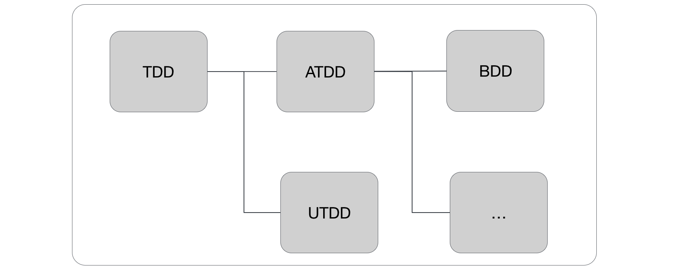
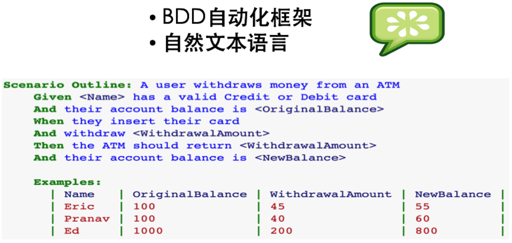
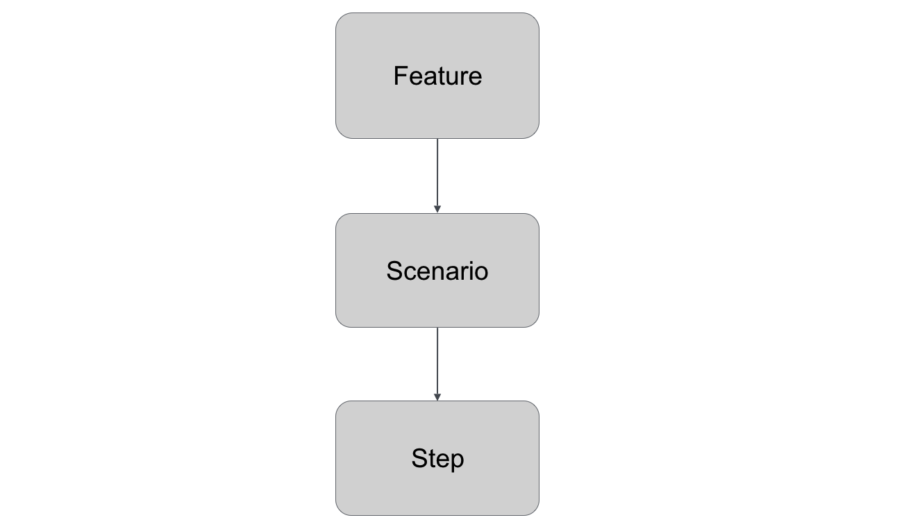
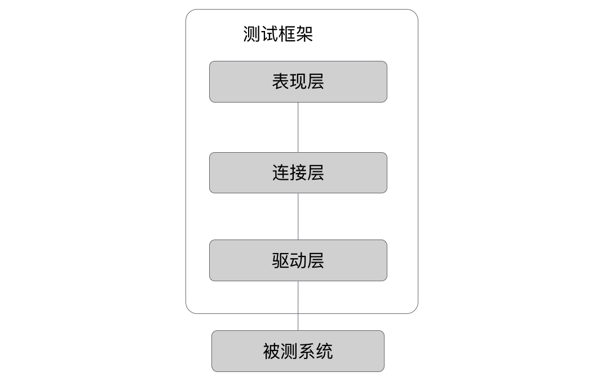
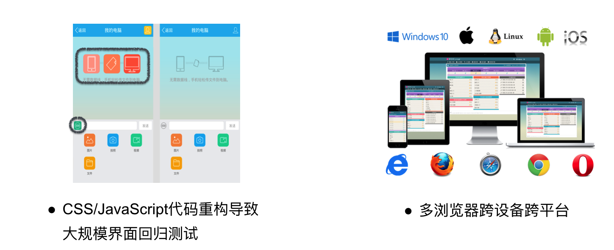
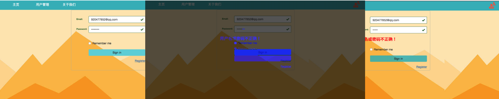

在前两篇文章中， 我们介绍了许多关于单元测试和TDD、API测试和消费者驱动的契约测试的内容，详情请参见《基于JavaScript敏捷测试（上篇）》《基于JavaScript敏捷测试（中篇）》
JavaScript Web 功能测试 与 BDD
BDD的概念与框架
介绍过金字塔的最下层单元测试，而后我们介绍了中间层API测试和契约测试，最后上层便是更加贴近最终用户的Web功能测试。现在业界比较流行的一种方式是选择BDD的方式来做该层测试。
BDD: 行为驱动开发(Behavior Driven Development）
从用户行为的角度编写测试，也是ATDD的具体特定实践。

BDD具体的实践框架有很多，比如：
- Cucumber
- Gauge
- RobotFramework
- Jbehave
- Concordion
那么，接下来我们就选取Cucumber来分析具体如何使用。

Cucumber框架在使用时，具体的行为由Feature文件来定义，每一个Feature文件中可以有很多个Scenario，不同的Scenario中存在一步步以Given/When/Then的形式来定义的Step，如下图为一个Feature文件中的一个Scenario，其中以自然语言定义了很多完成整个业务流程的步骤。

自动化测试架构
搭建Web功能自动化架构时候可选择的框架非常多，不免让人眼花缭乱，哪一种才是最好的、最快捷的搭建方式，其实了解了整个自动化测试的架构，再根据项目具体情况选择框架，整个过程就变得简单明了。我们首先看下下图功能测试架构图：

被测系统，需要测试的系统，比如是Web系统。
上层为测试框架，在此将其分为三层，分别为：驱动层、连接层、表现层。
驱动层，Selenium这一层，有了它们用例才能和被测系统进行交互（Selenium为支持多语言，多浏览器的开源Web自动化测试工具）。
连接层，通过函数调用的方式和驱动层打交道，因此该层最好支持驱动层所使用的编程语言。
表现层，Cucumber这一层。其作用包括测试用例管理、测试数据管理、测试运行、测试报告等。该层的选择需要考虑几个因素：
- 测试用例能否直接活文档管理。
- 测试数据管理在测试代码中，数据文件中，还是在数据库中或是由数据系统随机生成。
- 能否直接生成界面设计良好的测试报告含有重要页面截图。
- 是否提供易用的测试用例开发环境，比如是否有编辑器Intellij的IDE的插件。
- 引入某个测试框架之后对现有工作模式的影响程度，比如让不懂编程的测试人员写代码。
其他测试
视觉感知测试
介绍过测试金字塔最主要的三层，最上层为手动测试或其他类型的测试，这个其他类型就非常之多。在此只简单介绍一个很有趣的测试类型 – 视觉感知测试。
不知你是否有过这样的经历，团队因为遵循的敏捷迭代开发的工作流程，模块A在迭代1上线了，其功能和UI已经测试完毕，模块B在迭代2开发过程中，有一天发现，模块A的页面元素按钮由左边移到右边，究其原因是因为某个开发更改某元素CSS时候更改到公共组件。这种改变就算是测试们在每次上线前手动测试也未必能够发现，因为页面上pixel级别元素更改肉眼很难快速发现。如果项目有这样的需求可以考虑引入视觉感知测试解决。
视觉感知测试适用场景主要有以下两种:

视觉感知测试就是使用传统的对图片进行二进制比较的办法，结合敏捷迭代开发的理念，产生的一种针对界面布局的自动化测试方法。
为了能够最小代价完成该类型测试，我们可以结合前面提到的功能自动化测试，对功能自动化测试中的截图加以利用，对比图片更改。将其添加为UI自动化测试的最后一步。
具体操作步骤：
- 对于老版本进行截图（产品线上环境或者类产品的UAT环境）
- 对于新的发行版本进行截图（比如Staging环境）
- 配对并像素级别的图形比较
对图片进行对比可以有很多方式，也有一些比较成熟的工具，如Viff，但这里介绍一个非常轻量级图像对比工具 – Blink-diff，可以用npm一键安装，该工具对比效果如下（图片元素不同处已用蓝色标记）：

总结
本文基于JavaScript这门热门且轻量级的语言作为辅助，介绍了团队在整个敏捷测试流程中如何快速在单元、集成、端到端方面从不同角度搭建起完整的自动化测试框架。相关具体实践已经有完整的Demo在如下Repo中。
参考资料：